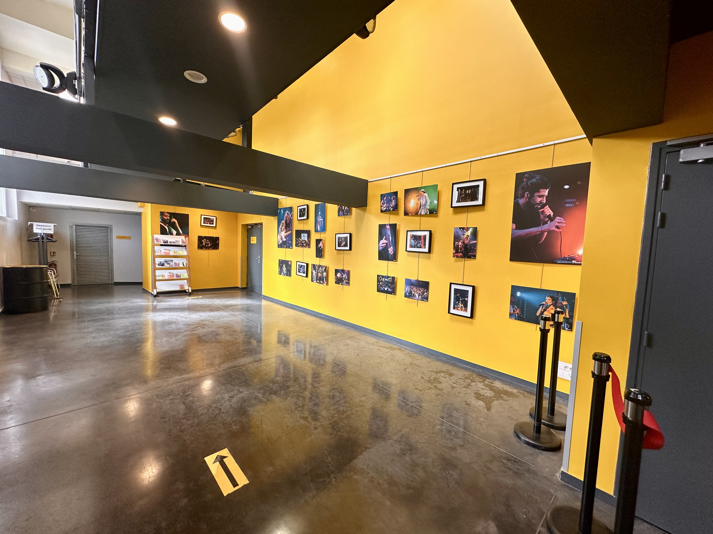
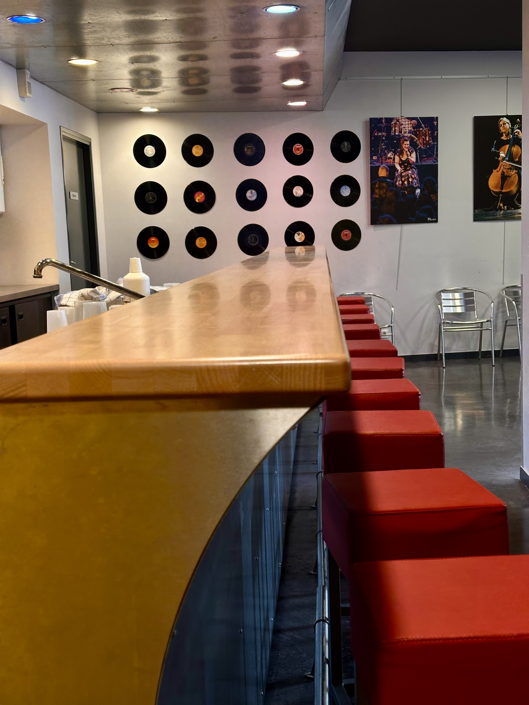
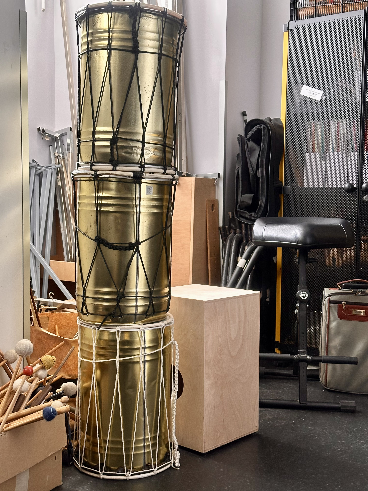
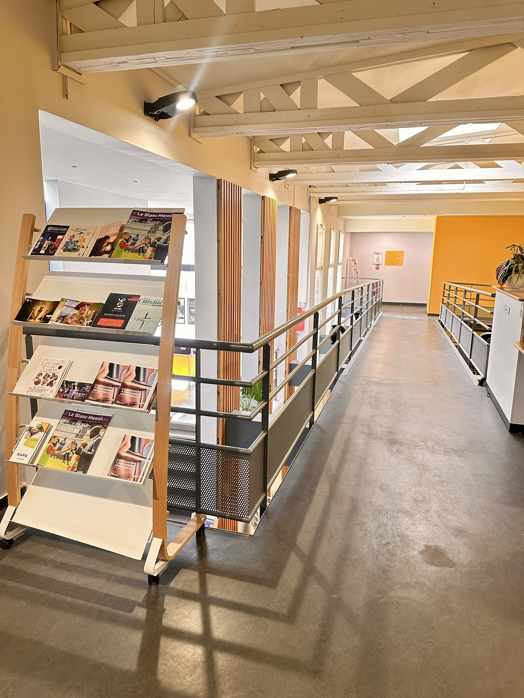
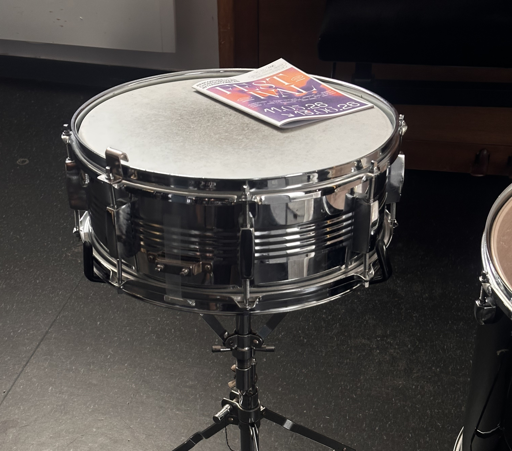
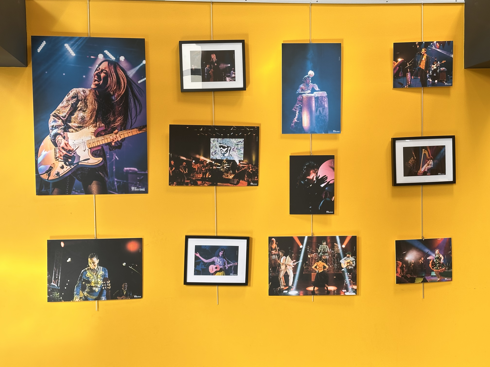

🏛️ Présentation de la structure
Le Conservatoire à Rayonnement Départemental (CRD) du Blanc-Mesnil est un établissement public d'enseignement artistique labellisé par le Ministère de la Culture. Il compte plus de 620 élèves encadrés par une équipe de 56 professeurs qualifiés, proposant un enseignement riche à travers 34 disciplines.
Pour assurer ses activités (345 heures d'enseignement par semaine et 45 spectacles par an), l'établissement est réparti sur deux sites distincts : l'Espace culturel Musique & Danse (avenue Paul-Vaillant-Couturier) et la Ferme Notre-Dame (avenue Descartes).
🎯 Missions confiées
Dès mon arrivée, j'ai intégré l'équipe d'accueil et j'ai eu l'opportunité de travailler sur deux sites aux environnements complémentaires :
📍 Au site principal du Conservatoire :
- Accueil physique et téléphonique : Prise en charge des familles, renseignement des usagers et orientation des élèves vers leurs salles de cours.
- Gestion administrative : Mise à jour des tableaux de suivi et de données sur Excel.
- Campagne de réinscription : Contact téléphonique direct avec les parents d'élèves pour le suivi des dossiers.
📍 Au site de La Ferme Notre-Dame :
- Autonomie en équipe réduite : Gestion du flux des élèves et accueil du public dans une structure de proximité.
- Sécurité et vie scolaire : Surveillance des locaux et application du règlement intérieur de l'établissement.
🛠️ Ce que j'ai appris
Ce stage m'a vraiment permis de progresser sur le terrain et de voir ce que c'est que le métier d'accueillant au quotidien. Voici les points forts que j'ai développés :
- Le contact avec le public : J'ai appris à m'adapter à tout le monde, que ce soit pour renseigner une famille un peu perdue à l'accueil ou pour gérer un appel téléphonique au standard sans stresser.
- L'organisation sur le terrain : En tournant sur les deux sites, j'ai dû apprendre à être super autonome, surtout à La Ferme où l'équipe est réduite et où il faut savoir gérer le flux des élèves tout seul.
- Les outils professionnels : J'ai pu manipuler concrètement des tableaux Excel pour de la gestion administrative.
📸 Galerie photos
Quelques photos de la structure et de mon environnement de travail.

Le hall principal et la galerie d'exposition culturelle
L'espace de convivialité décoré pour les usagers et artistes
Gestion et suivi du matériel d'enseignement artistique
Le comptoir d'information et l'affichage des brochures culturelles
Le comptoir d'information et l'affichage des brochures culturelles
Le comptoir d'information et l'affichage des brochures culturelles💡 Mon bilan personnel
Ces 5 semaines au Conservatoire ont été une expérience très positive. C'était ma première immersion prolongée sur le terrain, ce qui change des cours théoriques et permet de voir la réalité du métier d'accueillant.
Même si le contact direct avec le public ou la gestion des appels professionnels peuvent impressionner au début, j'ai rapidement pris mes marques grâce à la confiance de l'équipe. Ma mission sur le site de La Ferme m'a également prouvé que je savais faire preuve d'autonomie face aux demandes des usagers.
Ce stage confirme mon choix d'orientation en Bac Pro et me donne une base solide ainsi que plus d'assurance pour mes futures périodes de stage.
📎 Documents & Annexes
Retrouvez ci-dessous les documents produits ou collectés pendant ce stage.
Rapport de stage
Mon rapport complet analysant ces 5 semaines passées au Conservatoire · Format PDF
Plaquette de présentation du Conservatoire
Document d'information officiel présentant les différents sites et enseignements
Attestation de stage
Attestation signée par le tuteur de stage · Format PDF
[Nom du document Word]
[Description du document] · Format Word